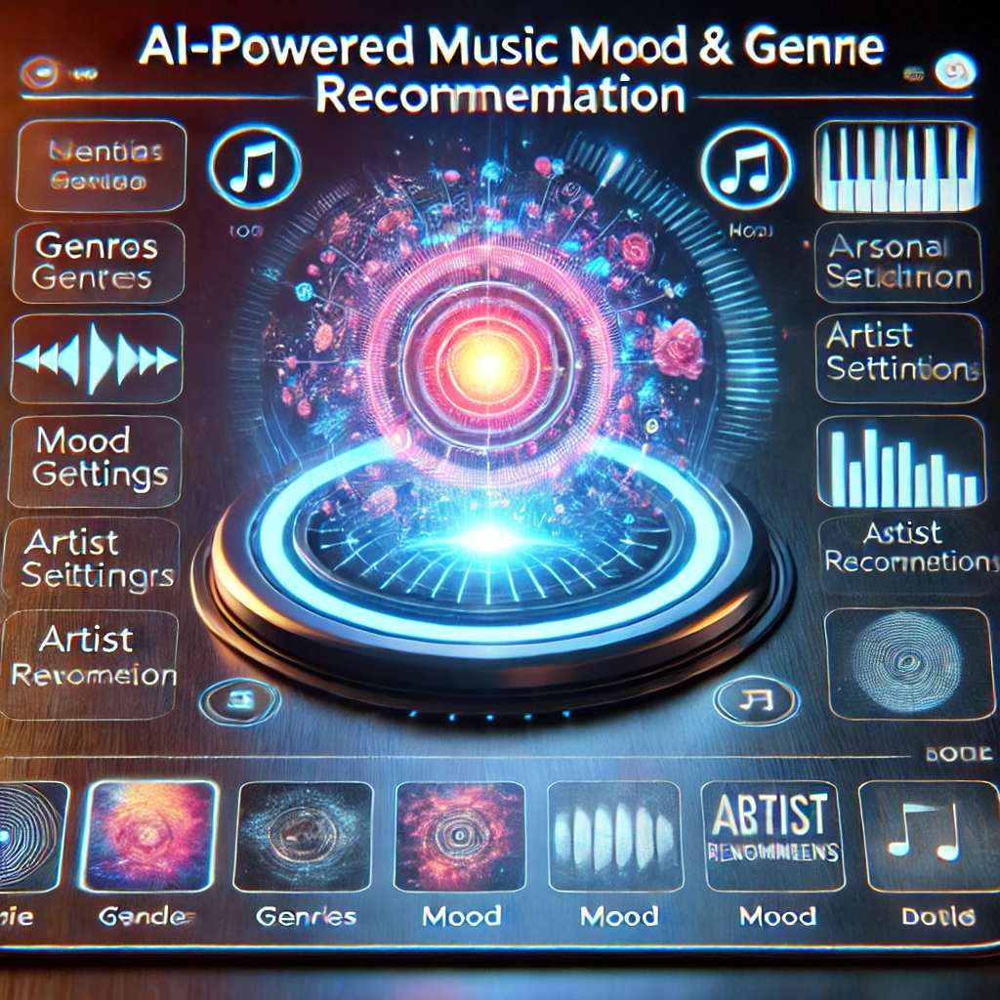
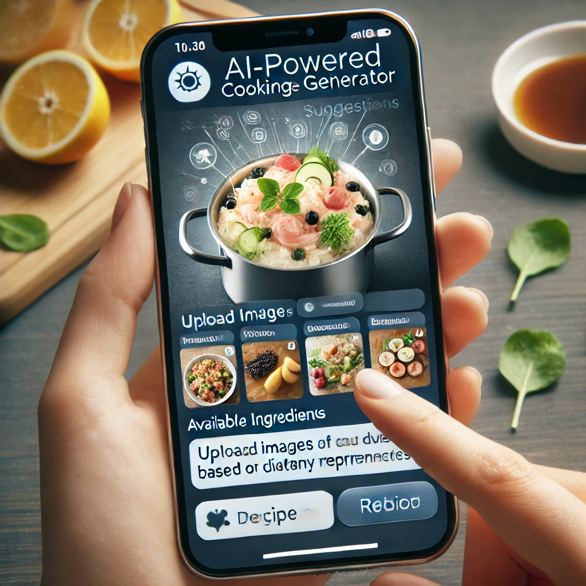
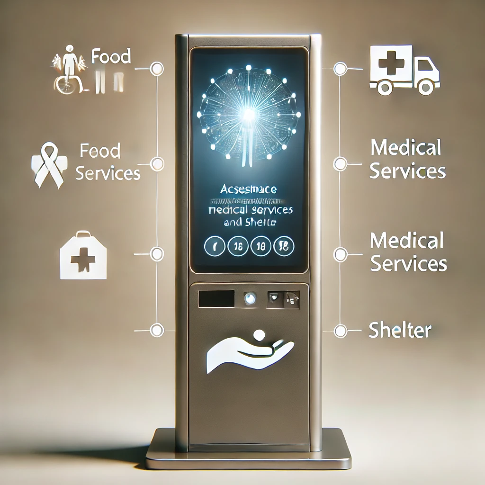

Wardrobe Assistant
This AI-based wardrobe assistant keeps track of your clothing inventory and suggests outfits based on the current weather, the occasion and frequently bought together items from online retailers. It helps optimise your wardrobe choices and makes it easier to plan your outfits.
Music Recommendation App
An AI-powered music recommendation app that tracks what you're listening to and suggests new music based on your mood, favorite artists and genre preferences. It can create custom playlists and offer suggestions for similar songs, albums or artists that align with your music taste.
Recipe Generator
This cooking app uses AI to analyse the ingredients you have at home (via image uploads) and suggests recipes you can make. It takes into account dietary preferences, allergies and whether you're aiming for a healthy or indulgent meal. It can even avoid certain foods that you dislike.
Help for Homeless
An kiosk designed to assist homeless individuals by providing real-time access to resources such as shelters, food, medical services and job opportunities. The kiosk guides users to the nearest available aid based on their location and needs, offering a convenient, accessible way for those without smartphones to find support.
Facial Recognition Implementation
This system uses facial recognition to enable secure and contactless payments in retail stores. It can also verify age for purchasing age-restricted products and entering age-restricted areas, making shopping faster and more secure while reducing the need for physical contact.
Social Media Analysis
This tool uses AI to monitor trending items on social media platforms. By analysing real-time trends and conversations, it helps e-commerce platforms like Amazon strategically adjust their advertising and pricing to promote popular products and attract more customers.